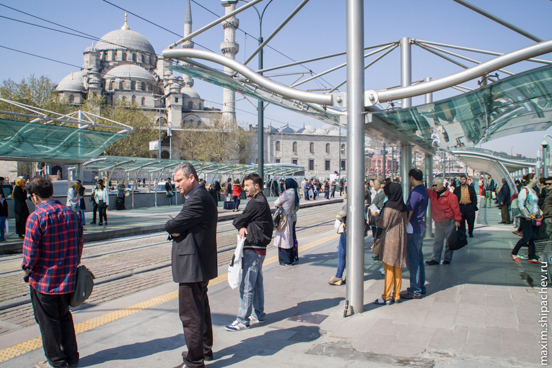
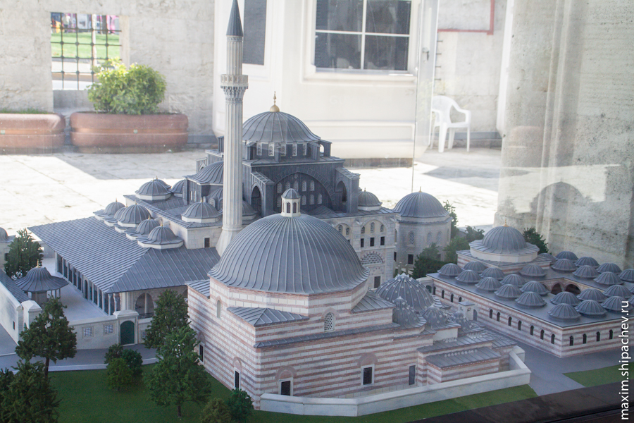

Это была последняя ночь, которую, планировалось, мы проведём в этом жилье. Нужно было подыскивать новое, конечно же с помощью интернета. Интернет, как назло, не работал. К счастью роутер висел над лестницей, к несчастью на высоте метра 4, к счастью мне удалось зацепиться за перила и дотянувшись перезагрузить его.
Вообще, если бы я ехал в Стамбул сегодня, я бы купил-таки местную сим-карту хотя бы под интернет. В отличие от России, в Стамбуле сим-карта стоит денег сама по себе — примерно 20 евро. Ещё лир за 20 (360 рублей) можно купить пакет, в котором будет гигабайт интернета. Нам же приходилось довольствоваться интернетом в гостиницах, который практически всегда был каким-то проблемным, да редкими свободными хотспотами. Итак доступ в интернет получен, решаем попробовать сервис booking.com, который в отличие от airbnb.com якобы специализируется на гостиницах. После поисков и выбора, продолжавшихся примерно час, выбираем Caravan Palace Hotel. Тут же оплачиваем бронирование картой на 2 ночи. Хозяина гостиницы — Османа, нет. Звоню ему, говорит — оставьте ключи в номере. Хорошо. Навьючиваем на себя рюкзаки выдвигаемся в район Султанахмет, самый попсовый среди туристов.
Так как ещё утро, и туристов не очень много решаем прокатиться на Ностальгическом трамвае.
Стамбульский трамвай
История стамбульского трамвая довольно любопытна. Начавший свою работу в качестве электрического городского транспорта в 1928 году, в 1966 году стамбульский трамвай был закрыт. Властям тогда показалось, что трамвай тормозит развитие города — он старомоден и мешает ездить набиравшим тогда популярность автомобилям. Свою ошибку город понял довольно скоро. Уровень загрязнения достиг своего пика, в 80-х годах Стамбул стал одним из самых загрязнённых городов на континенте, что не только плохо сказывалось на здоровье горожан, но и плохо влияло на туристическую привлекательность. В Стамбуле стали планировать возвращение трамвая. К сожалению, сложившаяся за почти 20 лет организация дорожного движения усложняет возвращение полноценного трамвая, поэтому, руководствуясь в том числе общественным мнением, в 1990 году трамвай возвращается на бульвар Истикляль, ставший к тому времени пешеходной зоной. Возвращается, причём, в том же виде в котором когда-то исчез. Вагоны трамвая сконструированы по сохранившимся чертежам трамая образца 1915 года. Линию между площадью Таксим и станцией подземного фуникулёра Тюнель называют Ностальгический трамвай. Уже через два года, в 1992 году, пассажиров начинают перевозить и современные трамваи. Вначале современный трамвай ходил между остановками Сиркеджи и Топкапы. Потом линия трамвая много раз удлинялась, В последний раз 30 января 2005 года линия была продлена от Сиркеджи до Кабаташ, при этом впервые за 44 года трамвай снова стал пересекать бухту Золотой Рог. Особенно стоит отметить, что относительно недавно (30 мая 2004 года) подвижной состав стамбульского трамвая был полностью обновлён. На смену трамвайным вагонам с высоким полом, вроде тех, что используются в Кемерове, пришли низкопольные вагоны Flexity Swift, сконструированные для Стамбула канадской фирме «Бомбардье». Посадка на трамвай осуществляется с перрона. Вход на перрон через турникеты, как в метро. В Стамбуле вообще нет такого понятия как кондуктор. В метро, на трамвай и паром через турникет, который принимает жетоны и акбили. В автобусе можно ездить только по акбилю, который нужно приложить к считывающему устройству на входе в автобус. Войти в автобус можно только через переднюю дверь, выйти через любую.

Ну а мы садимся на ностальгический трамвай преследуя и туристическо-познавательную цель, и цель попасть и точки А в точку Б. Сесть, кстати, с наскоку не получилось. То ли жетон, то ли билет на трамвай нужно было покупать метрах в 50 от остановки, а трамваю нужно было уже ехать. В конце концов вагоновожатый договорился с каким-то турком, что он рассчитается с нами своей картой, турок рассчитался, но денег с нас не взял.
Двигаем к непосещённой вчера достопримечательности — Галатской башне. Наш маршрут пролегает через Улицу Музыкальных Инструментов.
и Улицу Почтовых Марок
Наконец заходим в Галатскую башню, куда не попали вчера, и поднимаемся на неё. Галатская башня является одним из самых узнаваемых символов Стамбула. Высота её — 61 метр, но стоит она на горе (куда мы забирались вчера), а следовательно над уровнем моря башня возвышается уже на 140 метров. Построена в 14 веке, использовалась сначала, чтобы предупреждать о нападении, потом, чтобы наблюдать за возможными пожарами и беспорядками. В башне уставлен лифт.
Вход на Галатскую башню платный — 10 лир с человека, то есть за троих отдаём около 540 рублей. Наверху башни есть кафе, но как-то не вдохновило. Спускаемся с башни, идём до трамвайной остановки.

Пока находимся по эту сторону Золотого Рога, решаем съездить в Музей современного искусства, куда вчера не успели. До музея от Галатского моста одна трамвайная остановка. Выходим, идём пешком. Перед музеем неожиданно обнаруживаем мечеть Кылыч Али-паши. В ней в 16 веке был похоронен Джованни Диониджи Галени так же известный как Улудж Али так же известный как Кылыч Али-паша (тур. Kılıç Ali Paşa). Улудж Али родился в христианской Италии и его отец даже хотел чтобы сын стал священником, но сына захватили в плен берберийские пираты, и сам он, пробыв несколько лет в статусе «раба на галерах» принял ислам и тоже стал пиратом. Рядовым пиратом Улудж Али оставался недолго. Он накопил денег на собственную галеру, зарекомендовал себя одним из самых отчаянных пиратов, был примечен турецкими властями. Несколько раз вставал под флаги турецкого флота, а во время битвы при Лепанто, в которой турки, к слову, проиграли, проявил, как говорят, смекалку и мужество, захватил в плен флагман противника — Мальтийского ордена. За это Улудж Али не только был награждён титулом Кылыч (меч), но и стал адмиралом турецкого флота.

Выходим, идём к музею
На этом всё. В музее современных искусств в Стамбуле нельзя фотграфировать даже за деньги. Нельзя было даже фотографировать табличку, что нельзя фотографировать. В каждом зале минимум один человек охраны, всё странно строго. Честно говоря и фотографировать особо нечего. Какие-то инсталляции и псевдофилософские дизайнерские решения в духе той железяки во дворе. Логического объяснения запрету фотографирования я найти не могу. Назвались современным искусством, а ведут себя как ультраортодоксы. Выходим из музея, садимся на трамвай, едем. Выходим из трамвая — идём, ориентируясь на навигатор. Идти от трамвая около километра. Правда по выходу из трамвая нас ждало ещё одно приключение. У жены пропал телефон. Я позвонил на него. Длинные гудки, значит симка в телефоне, значит, скорее всего не украли. Отправил sms-ку «If you found this phone…». Результата нет. В течение дня буду звонить ещё на телефон несколько раз. Не доходя метров 50 до гостиницы, заходим в очередное кафе, попить чая со сладостями. Кафе, впрочем, это место можно назвать с большой натяжкой. По сути это жилой на первом этаж которого — кухня, витрина и пара столиков со стульями. Хозяин (непременно хозяин) такого дома живёт тем, что готовит сладости и продаёт их другим. Исходя из того, что место находится в удалении от туристических троп, продаёт он их в основном таким же стамбульцам. Всё очень по-домашнему. Таких точек в Стамбуле сотни. Слов «санэпидемстанция» и «пожарные», уверен нет в лексиконе таких продавцов. Если они ничего не значат, зачем платить больше?
Подходим к гостинице. Дверь заперта, телефон не отвечает. Но ещё не наступил час заселения, поэтому сильно не переживаем.
Пока идём отдохнуть в тени у фонтана…
Вскоре перезванивает хозяин, говорит, что скоро подойдёт и действительно скоро подходит. С заселением, правда, происходит одна заминка. Я подразумеваю, что жильё я оплатил, я хозяин, говорит, что это была просто бронь и деньги вернуться потом, а сейчас нужно рассчитаться налом. Не знаю, признаться, вернулись ли потом мне деньги, как-то не проследил этот момент, но отдаю хозяину 130 евро. Примерно этого количества наличных нам потом и не хватило, пришлось снимать в банкомате. Номер неплох, вдалеке даже видно море. Правда нет душевой кабины, в дешёвых стамбульских гостиницах вообще есть такая тема, душ просто в стене рядом с унитазом и ты такой моешься поливая и себя и унитаз. Короче, не очень культурно. Под окном оживлённый перекрёсток, несмотря на отсутствие светофоров пробок на нём не бывает. Пробок в Стамбуле мы вообще не видели. Из всех правил дорожного движения стамбульцы используют только одно — при движении нужно бибикать. Машина поехала — биби, машина остановилась — биби, подъезжаем к повороту — не снижая скорости биби, пешеход на дороге — биби, пешеход на тротутаре — биби. Я радовался каждый день, что мы не стали брать машину в прокат. Я определённо сошёл бы с ума. Пешеходы, к слову, не пользуются в Стамбуле никаким приоритетом. Пешеход уступает дорогу, бегает быстро, смотрит по сторонам. Остановиться посередине узкой улицы, чтобы выгрузить товар в магазин — нет проблем. Сзади собирается коолнна — нет проблем. Если у нас собирается колонна, то сигналит одна-две-три машины сзади, мол, что встал, уважаемый, езжай пока драка не случилась. В Стамбуле сигналят все, хоть 50 остановившихся машин будут сигналить. Впрочем тип водителя «пенсионер» здесь отсутствует (не выжил) в принципе, любая зарождающаяся пробка рассасывается в течение 5 минут. Никто не тормозит, не тупит и не буксует, даже разговаривая по сотовому телефону.
Ещё середина дня, поэтому отправляемся на прогулку к началу (или концу?) Босфорского пролива или даже Мраморному морю. так называемый Старый Город, где мы сейчас находимся опоясывает по берегу Мраморного моря и Босфору бульвар Кеннеди.

Пройдя около километра по набережной сворачиваем внутрь района к ещё одним достопримечательностям Стамбула Голубой мечети и Собору Святой Софии.


Посещение достопримечательностей пока откладываем, пора возвращаться в гостиницу. Проходим мимо одного из многочисленных отелей. Отель, судя по всему, крутой. Его рекомендует даже твиттер.
По дороге заходим в аналог нашего «Чибиса», выбор более чем скромный, зато можно примерно познакомиться с гастрономическими пристрастиями турков.
По возвращению в гостиницу ещё раз набираю номер телефона жены. Трубку берёт какой-то турок. Пытаюсь говорить с ним на английском, но тот понимает его ещё хуже чем я. Болтаем каждый о своём пару минут. В конце концов турок произносит два ключевых слова: «арт» и «музеум». Тут я понимаю, что телефон в музее современных искусств и завтра мы посетим его вновь. С надеждой и удовольствием едим арбуз.